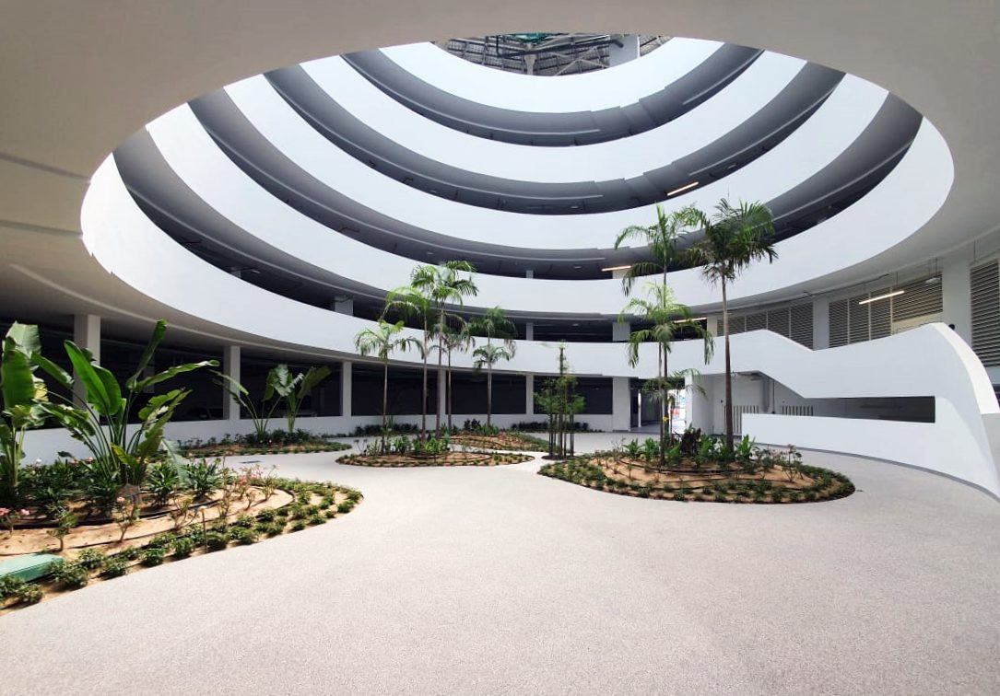

Drenante, antideslizante y sin juntas, para vivir el exterior todo el año: terrazas, caminos de jardín, patios y accesos que aguantan sol, lluvia y paso constante con un mantenimiento mínimo.

Resineo también resuelve grandes superficies transitables en espacios urbanos y comunitarios.
Résineo es una mezcla de piedra natural (mármol o cuarzo) y resina de poliuretano transparente que se extiende en obra, sin juntas. El resultado tiene el aspecto cálido de la piedra, pero se comporta como una superficie técnica: el agua de lluvia o de riego atraviesa el pavimento y no se queda en la superficie.
En una terraza esto significa que no hay charcos después de un chubasco, no hay rejuntado que limpiar y no hay piezas sueltas que se mueven con el tiempo.
Sobre losa de hormigón o baldosa bien adherida se aplica con unos 10 mm de espesor para uso peatonal. Sobre una base de grava compactada se sube a unos 30 mm. En todos los casos conviene una ligera pendiente (1-2 %) y una salida para el agua. Si tu terraza está sobre una vivienda, revisamos también la impermeabilización existente antes de proponer la solución.
Un manguerazo para el día a día y, una vez al año, una limpieza a fondo con cepillo y jabón neutro o con hidrolimpiadora a baja presión (máximo 80 bar y a unos 30 cm) para que la piedra recupere su color. Con un mantenimiento regular, la vida útil observada por el fabricante supera los 10-15 años.
¿Buscas un suelo cerrado para el garaje o una nave? Para eso trabajamos la resina epoxi de Apavi Green. ¿Quieres combinar la terraza con zonas verdes? Mira nuestro césped artificial.
La resina epoxi forma una capa lisa y cerrada, ideal para garajes, parkings o naves. Résineo es un pavimento de piedra natural, poroso y drenante, pensado sobre todo para exteriores: deja pasar el agua de lluvia y tiene aspecto de piedra, no de suelo pintado.
Para zonas peatonales se usa normalmente Résineo Drain. Para accesos con tráfico de vehículos existe una versión reforzada y se ajustan el espesor y el soporte. Lo valoramos en cada caso durante la visita técnica.
No directamente sobre tierra. Sobre una base de grava bien compactada se puede aplicar con un espesor mayor, de unos 30 mm. Sobre hormigón o baldosa existente se trabaja con unos 10 mm.
Résineo es un pavimento continuo sin juntas, así que no hay ranuras por las que crezcan hierbas, como pasa con las losas o los adoquines. Basta con mantener la superficie limpia de hojas y tierra.
Damos servicio en todo el archipiélago: Gran Canaria, Tenerife, Lanzarote, Fuerteventura, La Palma, La Gomera y El Hierro. En las islas no capitalinas, el desplazamiento se indica aparte en el presupuesto.
Cuéntanos la superficie y el uso y te enviamos un presupuesto gratuito con muestras de color.
Pedir presupuesto